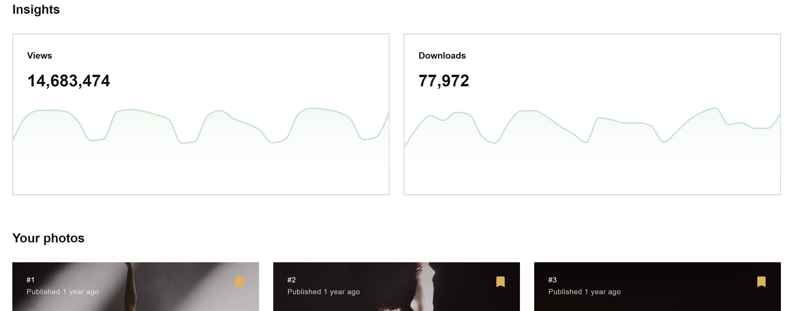

Unsplash Advanced Search is a redesigned image search engine for Unsplash, which incoporates more powerful filter functions than the original one.
View Search EngineUnsplash Advanced Search is a a image search engine specifically designed for Unsplash.
If you want to search for high-quality photos on the internet, you have powerful search engines like Google, Yahoo. However, their image databases are shitty. There are some high quality images but the majority of them are crappy, low resolution images. Is there free high-quality photos community? Yes there is. Unsplash is one of the most popular high-quality photo communities on the internet. The most awesome part of it is that Unsplash is free. However, on Unsplash website, there is no powerful search engine. Therefore, the purpose of my final project is to incorporate a powerful search engine in a high-quality photo database.
The simple answer is API! I code my Javascrip with JQuery. When user searches image, the search engine will pull the according API data from Unsplash. Once all the data is loaded, I use html and sass to display them on the website. For all the functions, the search engine filters, reorganizes, and redisplay the loaded API data, which is lighter and faster than fetching new data.
What have I changed?
First of all, thanks for the useful feedback from last class.
1. I design an "delicate" header in the search box so that user will know what the website is for. The reason why I didn't put a header under the logo is that I don't want to break the neat minimalistic layout.
2. I removed the resolution filter because it is unnecessary. The filter would be useful in Google because Google is filled with low-quality and low-resolution photos. Almost 99% of photos on Unsplash are considered well-crafted and are in relatively high-resolutions, so it wouldn't be useful to keep a resolution filter.
3. I added a default button for each filter in case user wants to undo filter.
4. I added a no photos sign if no photo applies to the filter in case user gets confused. wants to undo filter.
5. I put on my credit and my photo on the website to let people know I made it.
View version 1.1 View version 2.3 View PresentationFuture Expectation
1. Because of limited time, I haven't added the page function. The maximum number of images I could access per page is 30. So adding a page function is necessary to help the users search as many images as possible.
2. Right now, the filter cannot overlap, which means it limits the possible filter combination users can search. For example, if user wants to search photo with a landscape 3 by 2 aspect ratio and see those photos in order of popularity, being able to combine filter will be handy.
A tribute to Unsplash's Value & Why I didn't add download button
The reason why Unsplash is currently the most popular and well-curated photo community online is because it is for free. Under Unsplash's license, anyone can download photos and use them for all purposes including commercial use but saying thanks to the creators is always appreciated. Saying thanks can also help the photographers to gain more exposure. Not having a download button can force the users to go back to Unsplash original site and bring traffic back to the website but also to the creator. I am a photographer on Unsplash. I genuinely appreciate everyone who quotes my photo and brings traffic to my Unsplash account. At the same time, I hope users can also do the same to all the photographers on the site.

Full-screen 4 columns layout
Classmates prefer the wider full-screen 4 columns layout than the centered 3 columns layout of Unsplash website. Since the purpose of my project: Unsplash advanced search is to let users find the picture they need as fast as possible. So, a wider full-screen 4 columns layout can help them browse content in a faster way.
Header needed, a little more context
Classmates are not familiar with Unsplash's logo. Adding a header below the logo can be helpful in terms of helping them understand the purpose of the search engine.
The purpose of small resolution
The function to filter the small resolution photos might seem unnecessary. Firstly, since most users tend to search for the photo of the highest quality if possible, to filter out the small resolution is useless. Secondly, photos shared on Unsplash are all "high resolution" in a way. Unlike Google, Unsplash holds a well-curated, high-quality photo database. The bottom line is much higher so users don't need an extra function to filter photos according to their resolutions.
Undo Function
There is no undo function so if users want to see the photos in default order, they have to click the search button again, which is not intuitive.
View Search EngineAfter looking into a few photo search engine and the API data I can access, I summarize four essential functions users might need and I could realize: resolution, aspect ratio, popularity (most likes), time (most recent).
The resolution function is pretty easy to realize. By timing the width and height data of the image, I can get the image resolution and compare the resolution to the three if statements (High 40M, Medium 24M, Low 12M), to get the result I need.
The aspect ratio function is a little tricky. Since the width and height numbers are not perfectly divisible. For example, a image with 1999px width and 2999px height is still counted as 2 by 3 aspect ratio. What I did is to use the math.abs function to get the absolute value of the remainder of width by height. I use an if statement to set a boundary (<0.01,) so the function will only allow images with perfect or approximate 2 by 3 aspect ratio to come through.
PThe popularity function is tricky too. I used the sort() function which has many limitations I have to solve. Firstly, sort() function is supposed to sort one dimensional array but the API data I received from Unsplash is a complex multi-dimensional array. So I define a new one dimensional array called "popularity" to store only the numbers of likes and let the sort function to sort the popularity array. Secondly, sort() function is supposed to sort strings array but I only need to sort numbers. So I use an extra sortNumber function() to limit the capability of the sort function.
I am still working on the time function.
View Search EngineWhat is the project?
A specialized search engine for Unsplash, the largest high quality photo community on the internet.
Who is it for?
People who need high quality and well-polished copyright-free photos.
Why do you want to do it?
Unsplash's search engine is too simplified, lacking the basic functions which can help the users filter the photos they need. As you can see, if I search for "car," I can only filter photos in the given key words: sports car, Lamborghini, Bmw, etc. The website cannot show the photos of certain aspect ratio users are looking for. It cannot show the photos in terms of popularity. It cannot show photos with the highest resolution possible. Those are functions I believe users need and improves the overall user experience.
How will you do it?
It is a front-end development which I will use HTML CSS to design the search engine interface and use Javascript to access the API database of Unsplash.
| 12.3 | 1.0 | All the basic functions should be realized | first round of feedback about functionality. |
| 12.5 | 2.0 | All the user interface should be complete | second round of feedback about functionality and UI. |
| 12.10 | 2.1 | Presentation |
I enhanced my bouncing ball project by adding a slider controls the speed.
A new if statement was added because when users drag the slider, they might accidently click the background, so new ball would be created under the canvas.
if (mouseX < 400 && mouseY < 500) If the speed is degrading, there will be a serious problem in the algorithm. The code doesn't calculate the fiction, which means it doesn't know when to have the ball to a complete stop. The ball will never stop even if it bounces many times.
if (this.y > (height - this.w / 2)) {this.speed =
this.speed * speed;}
if (this.y < this.w / 2) { this.y=this.y + 10; } Edit on
P5.js
I enhanced my mid-term project with Kiwi by adding a function which allowed user to choose what the eyes should follow.
When making this new function, I found a hack to understand the new data library you use. That is to output relevant variable on the screen. When I first try to understand the PostNet code, I “decompose” the program structure by understanding what variables are defined and where they are used. My first useful tip is the naming of the variables can tell what it is for, such as “post” and “keypoint.score.” Then “i” variable and “j” variable caught my attention. I don’t know what they are for; they might relate to the numbering. So I use the text() function, to output the variables with the keypoint. I immediately know what they are for. “I” represents the numbers of people and “J” represents the body position of each person.
text("i="+i+" j="+j, keypoint.position.x,
keypoint.position.y)
To add the position tracking function means to track which “j” variables. I add a few buttons with according functions that changes the trackPoint variable. The function is realized.
PostNet with variables on P5.js Enhanced Eyes Tracking on P5.jsWhy computation is important to me? I have been wandering between the fields of filmmaking and computation media for about two years. I regard these two fields as my parallel interests and specialty because I have equal passions for both of them. However, for a long time, I fail to find the connection between these two. I can obviously feel that my two interests do benefit from each other but I don't know how.
Computation and filmmaking are fundamentally unrelated. Believe me it is true. The fundamental working philology are different. We code to solve problem. I think what IMA stands out from conventional computer science major is that we learn how to solve problems in a beautiful way. We make film to tell a story which represents a vision or an argument. Some people might disagree with me, by saying that computation and filmmaking are storytelling. That is cliché and bullshit in a sense. As long as we live and breath, anything we do is all story-telling. It is meaningless to tell such a widely known truth, like telling everyone the importance of critical thinking. The reason I fail to find the connection between these two is that even though some people argue that computation is also storytelling, the way how we tell stories are very distinct. To appreciate the beauty of computation and filmmaking, you need to realize their distinctiveness. I admit computation facilitates film industry in technical aspect especially in visual effect. Computation widely expand our imagination in movies. Without it, there will be no Star Wars. Without Star Wars, the modern cinema we know today will no longer exist.
However my argument in the beginning doesn't defy the fact that computation facilitates filmmaking, what I am saying is that computation and filmmaking are fundamentally unrelated. As a director, writer, or director of cinematography, editor, the most "antique" titles in filmmaking, one immersive themselves in creating film. You enter into a totally territory. When you build a character and the story, you are constantly thinking about its inner or outer conflict, the complexity of humanity. When you draw storyboard, you are looking in the aesthetics, the framing, the composition. All of them are unrelated in any way to computation.
Then, why computation is important to me? I spend almost my entire extracurricular time and energy in moving making either working on my films or helping others, so why I didn't transfer to a Film and Television? To me, studying computation rather than film helps me stand out from most of other filmmakers because the beauty and intricacy of computation enhance my ability to make film efficiently and meticulously. Efficiency and meticulousness are valuable qualities. Filmmaking is time-consuming. I won't say a director's vision and directing style are the most important part of filmmaking. Those things are more than important because they are required. An excellent and sustainable director must learn how to make film in a organized and timely manner. The ability to come up with awesome film idea is not rare, what is rare is that you not only have good idea and can turn that idea into a complete well-polished film. Studying computation is a training for me. I am trained to pay attention to every detail, because any minor error in any phase is not allowed. The intricate structure of object-orient programing is also a good training of my logical reasoning, which helps me ability to create complex characters' structures and storyline.
See the Pen Use Unsplash API to Fill CSS Grid Layout // jQuery by Leon Liu (@leoncooperliu) on CodePen.
I utilize the Unsplash Photo database API for the assignment. Because Unsplash is one of the best high quality photo-sharing community on the internet and it is for free, people download photos from it frequently. However, Unsplash doesn't feature a well-designed filters, so I design a Unsplash search engine which features the most basic filter function (landscape or portrait ratio).
Realizing the function is simple and straightforward. First, I use JQuery to get the API data from Unsplash and show it on the web. JQuery I believe is the most efficient JavaScript language since it is object-oriented from the ground. I use the selector to target the button and then I use JSON to get the API data from Unsplash. To add the photos to my website, I use the append() function to access the DOM.
Since the accessed API data is stored through var currentList, I can reuse it for the filter function.
var APIKey =
"c3ba5fa8e844fc1b4ef1ca56625e6e625aa111c6f8d5a0a68ff985fe5f001866";
var currentList;
I access the image height and width variables; then I use an if statement to compare them.
var imageWidth = val.width;
var imageHeight = val.height;
I also add a button to show my photos on Unsplash. The filter works the same.
Edit on P5.jsArtificial Intelligence is unstoppable. Does it mean that our future will be like the movie "Matrix" where A.I. destroys our lives and turn us into their batteries? Not necessarily. Will Artificial Intelligence bring well-being to human races or troubles. It is hard to give an answer. However, there is one thing for sure. Artificial Intelligence is unstoppable and this overall tendency is detrimental to creative and meaningful arts.
Internet connects each others, as a result it creates an explosion of data and information. Artificial Intelligence and algorithm are important and necessary because they bring machine-generated "order" to the chaos. The central idea behind the "order" is efficiency. How can we navigate ourselves and find things we need in the explosion of information which might cost us 1 million years to go through? We can't at least without Artificial Intelligence and algorithm. So, are Artificial Intelligence and algorithm evil like the Uber drivers complain in the article? It might be to some people, but there is no better way?
Why I believe artificial intelligence and algorithm are detrimental to creative and meaningful arts? because such an efficiency is shallow and uninspiring. One of the most influential directors of all time but also Tisch Alumni Martin Scorsese writes an article in the New York Times recently. He believes right now it is really such a depressing time for cinema and it will be even more depressing in the future. Disney and Netflix which take uncountable monetary advantage from internet and A.I. algorithm are behind such a tendency. When internet makes everything accessible, the number of TV shows and movies skyrockets. The average time users spent with each movie largely decreases. In order to attract more attention, Disney and Netflix have to "feed" people with movies that are attractive from the outside (beauty, sex, violence, superhero) but shallow in the inside. That is never why cinema is invented. "Cinema was about revelation - aesthetic, emotional and spiritual revelation. It was about characters - the complexity of people..." For superhero movies, there is no revelation, mystery or genuine emotional danger. Nothing is at risk. The pictures are made to satisfy a specific set of demands. It takes time to make good and thought-provoking films. The essence of the film is never to satisfy a specific demand.
Algorithm should never curate our content or at least some part of it. As an artist, we should be our curators. We should dare to challenge what algorithm and most people call mainstream. We should challenge them and tell our stories through our unique visions. Surprise them and tell them that "that is a good story not Marvel."
The bouncing balls won't degrade. They will bounce endlessly. Clicking those balls is such a relaxing experience.
update() {
this.y = this.y + this.speed;
this.speed = this.speed + gravity;
if (this.y > (height - this.w / 2)) {
this.speed = this.speed * -1;
}
}
The way I achieve the endless bouncing is through a non-degrading "speed" variable. A constantly increasing "speed" variable is adding to the y location of the balls, since as ball approaches the ground, the acceleration will increase because of the gravity.
this.speed = this.speed * -1;
However, when ball hits the ground and starts the next round of bouncing. The directionality of the acceleration should be reversed and the maximum acceleration it can achieve should be smaller. In the code, I reversed the direction without degrading the value.
Edit on P5.jsI have "obsessive compulsive disorder" especially in organizing and backing up my data. I have developed a high-efficient backup system but I still raise many concerns about the future of my data. Here is why.
Currently, I have used both cloud backup, mostly OneDrive, iCloud, Google Drive but also local DAS backup (3*2TB HDD Hard drive, 4*4TB HDD hard drive, 1*10TB HDD thunderbolt drive, 1*4TB high speed SSD raid, 2*1TB SSD hard drive). The way how I incorporate all those 11 drives into my daily working system is that I categorize them into three groups.
Working group: 1*4TB high speed SSD raid, 2*1TB SSD hard
drive
Transfer group: 1*10TB HDD thunderbolt drive
Transfer group: 1*10TB HDD
thunderbolt drive
Cloud-based backup: OneDrive, iCloud, Google Drive
Left top: 4TB HDD Backup Drive. Left down: 10TB HDD Transfer Drive. Right: 1TB SSD Working Drive
Working disks are usually high speed SSD drives which can greatly speed up my workflow in terms of loading and rendering files. Transfer disks are the "transfer station." All my working files will be backed up to transfer station. It also stores finished project files which I might use for portfolio purposes in foreseeable future. The backup disks store project files I finished years ago. For cloud-based backup, I only will upload the finished products. For example, if the project is a film, I will only backup the finished editing. Here are a few problems which worries me.
Drives have life span and I haven't come up with a way to efficiently migrate my data to new drives. More importantly, I don't know when the hard drive will die. Unlike tape drive which can last longer than a decade, hard disk drive (HDD) can only last 5-6 years. A few of my backup disks are close to 5 years life span. The data is stored across different partitions in the hard disk. Some of the partitions inside the backup drive fail. The useable capacity shrinks significantly.
Not having a stable high-speed internet limits the possibility of cloud-based backup. If you backup your data to cloud. Since cloud-based service doesn't store your data in one specific disk inside a server, like how I backup myself. The data is actually allocated across multiple disks and multiple servers. It seems safer and more malleable. Companies such as Microsoft can redistribute the data from old malfunctioning disks and retire them. However, how can I know my data is safe and the company didn't access my files? How can I access those files if I don't have internet? Besides, it happens many times that because my latest working files are too large to back up in time, when I am away from home and work on my laptop, I just realize the files I am working on are not the latest.
In foreseeable future, I think SSD might be the solution. SSD is stable and durable because it stores data on flash memory chips. Unlike tape drive or HDD, it won't lose magnetics. However, SSD is still too expensive in terms of capacity and there is a physical limitation on how much flash memory chips can be squeezed on the motherboard. I guess we won't achieve the ultimate solutions that can solve all the problems at one time. What we can do is to solve problems time by time.
I accessed the microphone of my computer and used the value to control the speed of the changing waves.
mic = new p5.AudioIn();
mic.start();
Although the range of the value from mic is the same as speed (both are from 1 to 0), remapping the value is still necessary. The value cannot be 0, which will freeze the animation. The value can also not be 1, which will accelerate the animation to a point that is hard to see it. From 0.2 to 0.7 seems to be an appropriate range after testing for a few times.
var value = map(mic.getLevel(), 0, 1, 0.2,0.7 );
createCube(3, 3, maxCircleSize, strokeSize, bgColor, strokeColor,value);
Edit on P5.js
I planned to apply what we learnt on class to add more flavors to my previous waving cube design. The photocell can tell the brightness of the surrounding environment so I imagine that I could use it to control the brightness of the background color. I also planned to use the potentiometer to control the maximum size of the changing cube since potentiometer is the only controller we have, which can accurately adjust the value.
The first step was to incorporate the waving cube code to the code Dan gave us on class. I copied and pasted the core of my waving cube code: the createCube() function.
function createCube(numCols, numRows, maxCircleSize, strokeSize,
bgColor, strokeColor)
The next step was to modify the output from the Arduino. I initialized two values and divided them with the commas.
int value1 = analogRead(A0);
int value2 = analogRead(A1);
Serial.print(value1);
Serial.print(",");
Serial.println(value2);
The third step was to modify the Dan's gotData() function. I printed the two values out, to check whether everything works fine. After remapping the values, I inputted the new values into my createCube() function. Since the createCube() function was wrapped in the gotData() function, while the gotData() function was wrapped in the setup() function, which the program would run in default. There was no need to have an extra draw() function.
println("value 1:"+sensors[0]);
println("value 2:"+sensors[1]);
var color = map(sensors[0],0,255,0,255);
var size = map(sensors[1],10,1023,20,300);
createCanvas(canWidth, canWidth);
createCube(numRows, numRows, size, strokeSize, color, strokeColor);
Everything went pretty smoothly and well.
Edit on P5.js1. The Painting (p5.js)
I am inspired by the painting installation in the Harry Porter attraction of Universal Studio. The painting is basically a display where the characters can be animated, they can talk, wave hand, smile, etc. The colors and lighting are calibrated so well that you really cannot tell it is a screen but a painting that has magic.
So I want to make such a "painting" in which a scary character from one of the horror movies stand still. I will also install a camera on top of the painting. The camera will sensor whether there are people standing in front of the paintings. If there are people standing in front of the paintings, the character will not move at all. If there is no one standing in front of the painting (at least no one stands right in front of the painting), the character will move, such as yawning, looking around or walking out of the frame.
2. The mystrey (p5.js)
I can build a HTML interface through p5.js which is a game. Players have to turn off the three pumpkin lights through the combination of four on/off switches within 2 minutes. Each switch controls only a segment of a complex series-parallel circuit which will be realized through a algorithm using if or else statements. Players have to turn on or off each switch to figure out how each switch works. If they fail to turn off all the three pumpkin lights, they lose.
3. Awesome Cool Skull (p5.js)
Players can customize the appearance of the skull based on their preference. Once they finish it, the program can download the skull as JPEG and send it to their cell phones.
4. Drawing Candies Competition (p5.js)
I am inspired by Google Quick Draw. Player draw a certain object and let the computer will use the artificial neural engine to guess what it is. I could build a program using the Google draw api to have the players draw only Halloween-related objects. It can be an interesting competition and I will set up a record board to show who draw the most number of objects within 2 minutes.
5. Candies Simulation (p5.js)
I think it is always interesting to see how compute algorithm simulates real-life physics. I imagine on the html interface within a limited amount of ink, player is asked to draw a two dimensional container. After you click the play button, lots of candies will be poured down, the one who draws the container that can contain the most number of candies wins.
6. Which door to open? (p5.js)
I am inspired by Google Quick Draw. Player draw a certain object and let the computer will use the artificial neural engine to guess what it is. I could build a program using the Google draw api to have the players draw only Halloween-related objects. It can be an interesting competition and I will set up a record board to show who draw the most number of objects within 2 minutes.
7. The Eye (p5.js)
This will be an art installation that incorporates p5.js. Similar to the painting idea, the installation also features a camera at the top, which will sensor viewers' position. The creepy large pupil will randomly select one of the viewers and stare at him or her.
8. Which one is the ghost? (p5.js)
Similar to the three doors concept, which one is the ghost is a game where player can pick one of the three characters standing in front of them and have them turn around. The difference is that when the three characters are facing the opposite direction player really can't tell which is normal people and which is the ghost. There is no signs that can provide evidence or deceive the players.
9. Ghost, run! (p5.js)
Ghost, run will be a chrome plugin which is only available to download during Halloween. It basically replaces the original T-Rex, Run! game in chrome with Halloween theme characters and maps.
10. Who makes the scary sound? (p5.js + Arduino)
It will be an installation that hides a speak which is connected to Arduino with a camera sensor. When people pass by the installation, the speaker will play scary sound effect. Because the installation can act as a disguise for the speaker. For example it can be a water bottle or plant which people won't think that will be a speaker in it. Every time it plays a scary sound effect, it will scare the people.
The organization started with creating a function and moving all the major algorithm into this function. The function I created is called createCube and it includes all the variables user are going to change.
function createCube(numCols, numRows, maxCircleSize, strokeSize,
bgColor, strokeColor)
The second step started with using DOM to create sliders that control each variables.
text0 = createElement('h3', 'canvas size');
slider0 =
createSlider(300, 550, 550, 10);
Slider will have a default value, so when declaring the variables at the beginning of the code, I don't need to assign a value to it.
slider = createSlider(minimum value, maximum value, default value,
step size)
The last step is to declare variables within the draw() function to store the value of the slider. I then input all the variables in the function.
A few problems I hope to improve. Having a front-end web development background, I found DOM is very inefficient in writing HTML. I usually use class to define all the CSS and then add the class to the div to apply the styling but in DOM I cannot create class. I want to use the flexbox feature of CSS so that every time user changes the size of the canvas, the position of all the sliders can change accordingly.
Edit on P5.jsWe are connected by the little devices we carry everyday: cell phones and the network cell phones connect to: internet. Today, cell phones are so capable and we are using them so naturally that we don't even realize we are using them: making phone calls, texting friends on social medias, searching the internet, taking photos, finding places on Google Map, paying, etc. We enjoy a level of convenience we never have before throughout human history, while at the same time we are actively uploading and exposing our data to the internet at a rate we also never have before throughout our history. In China, mobile payment such as WeChat pay and Alipay become so widespread that people tend not to bring any cash. We can pay the exact amount of money, no need for change. Every time we make a transaction via mobile payment, lots of our information are exposed: our location where the transaction happen, the time we make the transaction, the amount of money we spent, and our transaction record which will be saved to the server of Central Bank of China. So what? The question are we willing to sacrifice our information security with everyday convenience might not be central to our problem. In countries such as China, how the country runs is so different from western countries that people don't even have the choice to reject it. In some area, such as banking, the central government technically owns the majority of companies. The transaction you made anywhere or anytime even prior to mobile payment will be recorded by the Central Bank of China, unless you are living in a 100% cash-based way of living, which is unrealistic. We know it and we "embrace" it because we might not have a second choice. If that is the case, I guess the sarcastic lesson we Chinese always ask ourselves is that did I do something wrong. Only if we did something wrong, our data will become "valuable" for the government to track down. If not, I guess most Chinese will say "just relax." The logics might seem very absurd but I guess is true?
I designed the changing cubes project to be EXTREMELY CUSTOMIZABLE. User can change all the settings including the number of rows, number of columns, size of the cube, changing speed, changing gap, the width of the canvas, and the height of the canvas.
A few tricks I used are
FrameCount variable, a constantly increasing variable from 0 when the user starts to run the function. I use the FrameCount variable as the x value for a Cos function which will output a constantly increasing then decreasing values within a particular range.
Double for loop, which I use it to map out the cubes. I introduce a "offset" value together with a carefully-designed algorithm to create the waves effect. You can check my project online for detail.
Edit on P5.jsThe development of computer graphics makes human society more and more visual-driven than any other time throughout the history. Some people say it is a good thing since photos and images are very efficient in communicating ideas. We see things faster than read things. Some people say too much relying on photos and images is dangerous, because they can be deceiving and biased. Should we worry about that the images we see are subjective and deceiving?
"We create meaning about the world around us through the use of language and images." In another word, we understand the world through representing it. It has been long debated about whether the system of representation truly reflect the world as it is. The purpose of the debate sounds reasonable but how do people define "truly?" How do people define "objective?"
People have to accept that we never can truly or objectively represent the world as it is. if people are involved in the process, things never can be represented objectively because we as humans have limited knowledge. Consequently, our judgement and representation are always biased and reflected on the knowledge we acquire of. The invention of modern computer graphics even complicates it because we have so many ways of representing the world. Instead of worrying about it, I suggest we should embrace and see the beauty behind our "biased" representation: the uniqueness of each way of representing the world. For example, motion pictures are so efficient in telling interesting non-linear stories through light, camera, action and so on: the beauty of cinema. Poetry is so unique in its concise and thought-provoking sentences: the beauty of language. Computer games are so interactive that users can be part of the story: the beauty of interactive media. New ways are emerging and old ways never die.
I was inspired by cyborg artist Neil Harbission. Neil is color blind but instead of seeing color he is able to hear color through the antenna device he implants in his body. What my light sensitive speak does is help people to "hear" light. I use a photoresistor as the analog input, which can convert the surrounding light information to analog signal which is then converted to sound information through the speaker.
map (value, fromLow, fromHigh, toLow, toHigh)
One of the challenges is how to use the map function to create fully functionable light sensitive speaker. Map function can remap a number to a defined range. In the first test, at certain analog inputs, the speaker is mute. If the speaker is mute, not giving out any feedback, the user will be blind. So, I re-adjust the lowest and highest value of the map function to make sure the speaker always make sound which will give instant feedback to the users when the light changes.
void setup() {
Serial.begin(9600);}
void loop() {
int sensor = analogRead(A0);
int input = map(sensor, 0,1024,0,255);
analogWrite(9,input);
Serial.print("input: ");
Serial.println(sensor);
}
Things change because things don't change. It sounds contradictory but it is true. The opening paragraph of Marshall Mccluhan's "The Medium is the Message" summarizes a fundamental idea pretty well: the medium serves as an extension of ourselves. The purpose of the medium, or some might say the underlying message of any medium, always stays the same: they are tools serving us. The basic function of the advanced IBM's server-level computer is the same as the rock human used to make fire millions of years ago.
If everything is constantly changing, change will lose its meaning. Change won't make a difference since everything is changing. Change is only valid when something stays the same and that change can make a difference on it. In another world, we evolve because the way how we solve problem changes to a higher and higher, more and more efficient level but throughout the history the fundamental problem we are solving (the extension of ourselves) never changes. How is Computational media different from previous media? Efficiency changes. Computational media is a product of the highest efficiency we can create today but the idea of efficiency has no maximum. The efficiency of problem-solving would be a eternal challenge for the entire human race.
I plan to use a more complex if statement to challenge myself for the homework assignment. So I apply a double if statement. I was thinking about using two switches because it will generate three different possible output which can be presented through the light. I notice that the school gave us a transparent light bulb which I thought can output different colors but the light bulb could only shine white light so I had to find different way to present the three possible outputs. Then I decided to make the light blink and use the time difference between each blink to indicate the output.
To find out what can or can't be used as variable, or stored or be remembered, one has to understand the purpose of technology, the idea of "assistive technology." The article All Technology is Assistive makes me think of an invention initially designed for the disable but everyone is using it every day. Think about what we are doing the most on our cell phones except listening to music and watching videos. It is not hard to find out the answer: we are texting all the time, on our social media applications, messages, email, etc. I guess twenty years ago the most typical way normal people communicate with each other is either talk in real life or through a phone call. However, I believe at this point if people are separated, people tend to text rather than talk to each others. Why?
It is shocking that our most common way of communicating with each other in the era of mass media is initially designed for deaf and mute people because they cannot speak or hear. For either talking or texting, their functions stay the same to help people communicate. so the question I asked in the very beginning about the boundary of mass media communication can be traced back to the question about boundary in the era before mass media communication when people tend to talk on the phone and write things on their notebook. At that time, do we have rules about what can be stored and remembered. I guess we do and we always do. Technology always serve the same fundamental functions: the extension of sense. What is changing is the way how we set up the boundaries as technology changes.
The device I design can not only work as a switch but also be used to check the conductivity of certain liquid. You pour certain liquid in the glass. If the liquid is conductive, the light will be on. The more conductive the liquid is, the higher the intensity of the light will be. In the video, I poured some tap water. It is interesting that tap water is not conductive as we think, since the light is off. After I add some salt, the water immediately started to become conductive and the light is on. As I stir the water, the water becomes more conductive which can be told by the increasing intensity of the light.
Link to VideoHuman is well-known for creating powerful tools throughout the history: camera, telephone, vehicle, airplane, and of course the foundation of all modern electronic devices——computers. The reason why I believe everyone should care about computer or computation is that you are using them every single day consciously or unconsciously. Some people might argue that they never use computer because they do not own one.
Then the question arises. What are computers? How do you define computers? To many people, computers might only refer to the large, black, box-size desktops or small light-weight laptops but is it true? I have the experience building my own desktop workstation from buying all "the elements:" CPU, GPU, RAM, cooling system, power system, hard drives to connecting everything up like building LEGO, then setting up the system and tweaking the performance by overclocking. So, I probably have a more "tangible" understanding of the computer. To me, anything that has a central processing unit (CPU), which means it is able to process and execute commands, is considered as a computer. Given that definition, cell-phone, digital camera, microwave, washing machine are all computers.
However, the definition might go out of date very soon because the invention of the cloud. Cloud computation means all the processing and computation moves from the local to the server. The advantage is that the performance of cloud computer can have no limit. Performance is not just about how powerful the CPU or GPU is. Performance is a complicated factor that considers not only the hardware but also the cooling. Laptop's performance is always not as good as desktop's because it is too thin to cool the motherboard well. In contrast, servers are optimized for cooling because it is designed to process huge amount of workflow 24 hours 7 days at all time. The disadvantage is that user need internet connection, since you need internet to send commands to the serve and the server would send the computing result to you. Previously I thought computer needs CPU to process, which is the reason why I define everything that has a CPU is a computer. In the near future, the internet becomes more and more essential in the process of computing. Doesn't it mean that the future definition of computer should also include internet? I guess we will see.